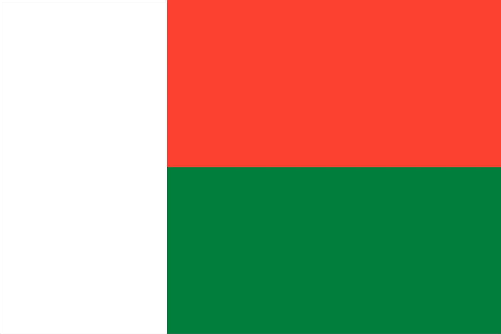

About Me
Hello! My name is Chrysologue Xyste Rabearson, and I am proud to call the beautiful island nation of Madagascar my home. I currently work as a Back Office Assistant, where I enjoy contributing to efficient operations and supporting my team behind the scenes. In my free time, I love playing the guitar, which allows me to express my creativity and unwind after a long day. I also find joy in immersing myself in nature, whether it's walking through lush greenery or simply taking a moment to appreciate the serene beauty around me.
Antananarivo, Madagascar
Madagascar is an island nation in the Indian Ocean, located off the southeastern coast of Africa. It is the fourth-largest island in the world, known for its unique biodiversity, with many species found nowhere else on Earth. The country features diverse landscapes, from tropical rainforests to coastal beaches The capital, Antananarivo, is the cultural and political center. Madagascar’s economy is driven by agriculture, with vanilla, coffee, and spices being key exports. The island is also a popular eco-tourism destination due to its stunning landscapes and remarkable wildlife, including lemurs and chameleons. Despite challenges like deforestation, efforts to preserve its natural heritage continue.